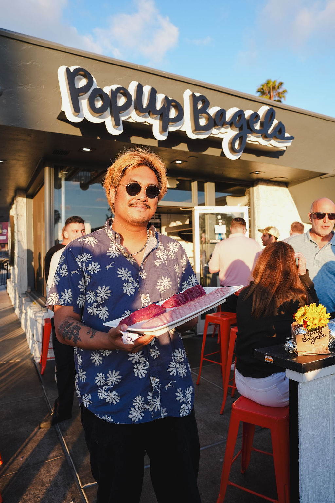
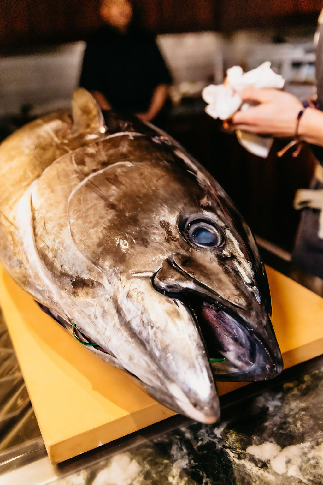
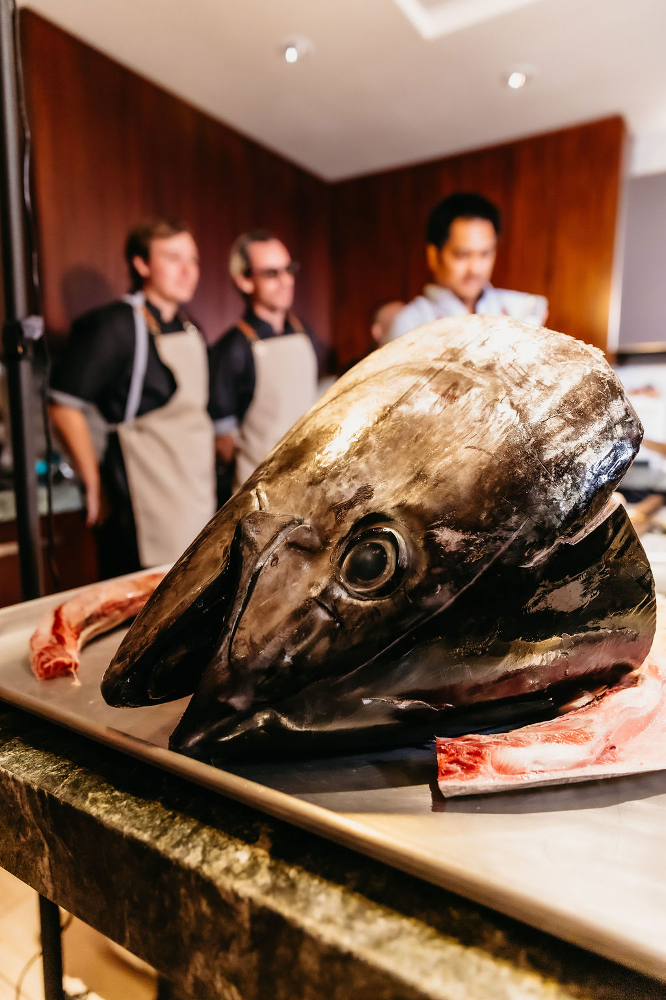
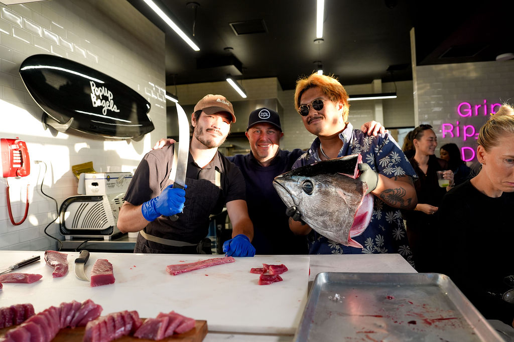
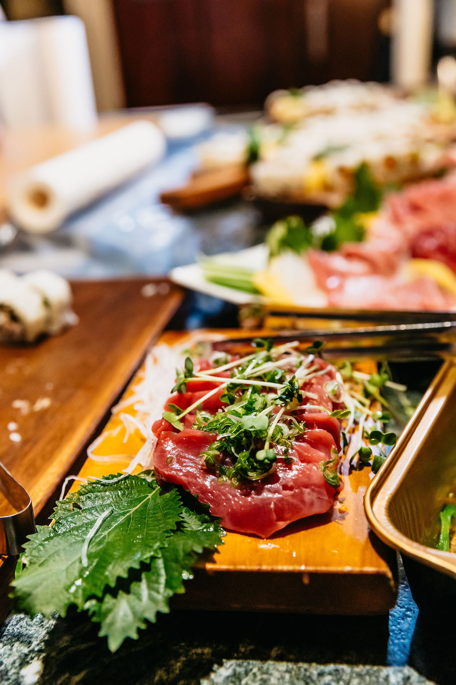
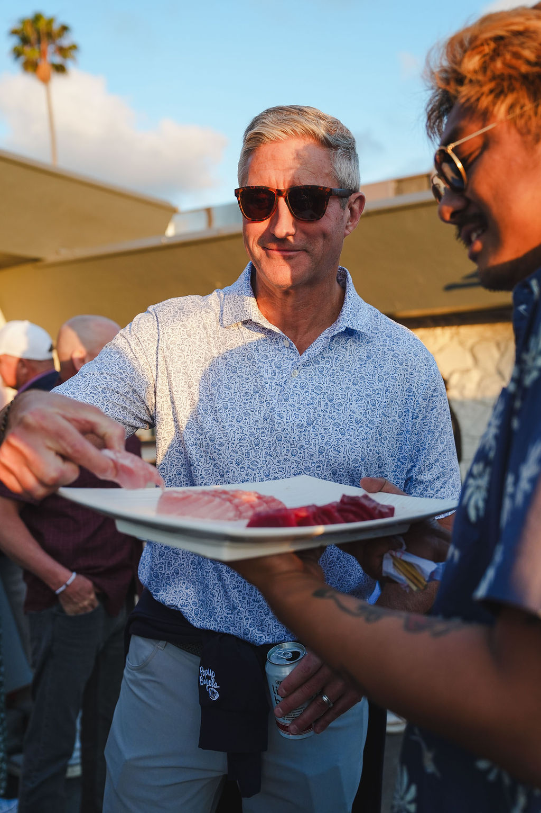

01
Private Events
Donor dinners, birthday celebrations, curated home events. The full Otoro experience, brought to your venue — from whole fish to final bite.
San Diego, California
A premium seafood hospitality series built around the theater of exceptional fish — most notably, the live bluefin tuna cutting experience. Private rooms, weddings, and corporate evenings out of San Diego.

01 / About
The theater of exceptional fish, set on your table.
Otoro Club turns high-quality seafood into a social event that feels educational, luxurious, and unforgettable. Where most event catering is functional, Otoro is a focal point. Guests don’t just eat — they witness the craft, engage with the chef, and walk away with a story worth telling.
An events series by Riviera Seafood Club — the direct-to-consumer brand of a family operation that has been moving fresh bluefin tuna in the United States since 1989 under Prime Time Seafood.
A whole bluefin tuna broken down tableside by our master cutter — a precise, dramatic ceremony that signals what follows is something different.
From hand rolls assembled to order to meticulously arranged sashimi spreads, every plate is designed to look as exceptional as it tastes.
Sourcing, cold chain, staffing, setup, service. Hosts are fully present with their guests; our team handles every detail in the background.

02 / The Experience
Three movements. One unforgettable evening.
Each event runs roughly three hours. The cadence is the same regardless of size; the room and the headcount change.
The whole bluefin sits on ice on a presentation table — the centerpiece of the room before a single piece is served.
Our master cutter walks the room through the fish: where it was raised, how it was harvested via the Ike Jime method, why this particular fish was selected. Each major cut is named in Japanese and English.
Courses are plated and served as the fish is broken down — akami, chu-toro, otoro, kama-toro, with seasonal accompaniments. Wine and sake pairings optional.
A final family-style course, dessert, and photography from the evening delivered within 72 hours — color-graded and ready for the room to share.

03 / Gallery
A room before service. A platter at sunset. The trophy head, presented.








04 / Services
Otoro travels. Wherever the room is, we bring the fish, the chef, the plating, and the production. Four formats we’re built for — anything beyond is a conversation.
01
Donor dinners, birthday celebrations, curated home events. The full Otoro experience, brought to your venue — from whole fish to final bite.
02
A live tuna cutting station as your cocktail-hour centerpiece. Sashimi, hand rolls, and a chef who becomes part of the story for years.
03
Elevate brand moments, client dinners, and team events with a sensory experience that creates real engagement. Higher-touch hospitality for higher-stakes occasions.
04
Preferred-vendor relationships with event spaces, luxury real-estate gatherings, and chef collaborations that generate recurring exposure and credibility.
05 / Lineage
Three decades of bluefin, distilled into one evening.
Otoro Club is the events arm of Riviera Seafood Club, the direct-to-consumer brand of a family operation that has been moving fresh bluefin tuna in the United States since 1989 under Prime Time Seafood — today the largest distributor of fresh bluefin tuna in the country.
Bluefin is sourced from sustainably ranched stock in Baja and harvested to order via Ike Jime, the Japanese technique that preserves flavor and texture. The same supply chain that fills sushi counters across the country lands, intact, on your table.
06 / Begin
Tell us about your event. We’ll follow up within 24 hours to discuss scope, venue, guest count, and what an Otoro evening can look like for your room.
Private rooms, donor dinners, weddings, corporate evenings — wherever the room is, we bring the rest.
07 / Inquire
Share a few details and we’ll be in touch. For pressing timelines, email us directly at reservations@otoroclub.com.